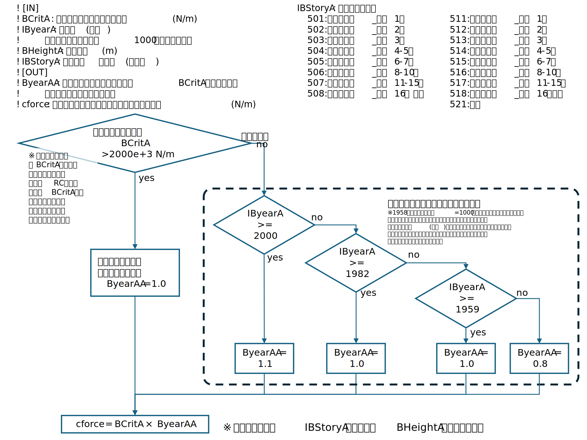

3. 家屋倒壊判定モジュールのカスタマイズ方法
ビルドに必要な環境
コンパイラ
作業の前に事前にインストールしてください。
| 名称 | バージョン | 内容 |
|---|---|---|
| Intel oneAPI | Intel(R) 64, Version 2021.10.0 Build 20230609_000000 | Fortranコンパイラ |
| Microsoft Visual Studio 2019 | 16.11.8 | C,C++コンパイラ |
OS
Windows 10 or 11
家屋倒壊判定モジュールのカスタマイズ・ビルド方法
1. morpho2DHSolver.zipを自分のPCにコピーし解凍する。
ファイル構成は以下のようになっています。
morpho2DHSolver
- iRICsolvers_Morpho2DH : ビルド済みのMorpho2DHのソルバー(morpho2d.exe)が保存されるフォルダ
- definition.xml : exeのバージョン等が記載されているxml
- morpho2d.exe : ビルド済みのMorpho2DHのソルバーのexe
- translation_ja_JP.ts : 翻訳ファイル
- src : Morpho2DHのソルバーのソース・オブジェクトファイルを収めているフォルダ
- build.bat : ビルドを実行するバッチファイル
- func_cforce.f90 : 家屋倒壊閾値を変動させるサブルーチン
- func_fbuilding.f90 : 土石流外力を計算するサブルーチン
- *.obj : 建屋倒壊判定以外のソルバーのビルド済みファイル
- *.mod : 建屋倒壊判定以外のソルバーのビルド済みファイル
- *.lib : 建屋倒壊判定以外のソルバーのビルド済みファイル
2. 家屋倒壊判定モジュールのサブルーチンをカスタマイズする。
家屋倒壊判定モジュールは以下の二つのサブルーチンで構成されており、この中の処理を更新することで、カスタマイズが出来ます。
func_cforce.f90: 家屋倒壊閾値を変動させるサブルーチンfunc_fbuilding.f90: 土石流外力を計算するサブルーチン
家屋倒壊閾値を変動させるサブルーチンの説明
以下に示すfunc_cforce.f90内のfunction cforce()の中身を書き換えてください。
それ以外の部分は変更しないでください。
module func_cforce
USE allo1
USE allo2
USE allo3
USE allo4
USE allo5
USE GRIDCOORD
USE GridCond
USE CalcCond
USE Take1Var
implicit none
contains
! 建屋倒壊とみなす単位長さあたりの力の閾値を計算する
! 全建物(構造種別・階数などによらず)に対して実行される
!
! 構造種別の違いはBCritAの絶対値で判定する必要がある。
! RC等の非木造のBCritAは木造に比べるとかなり大きいという仮定の元に判定する。
!
! [IN]
! BCritA : 基本となる建屋倒壊判定閾値(N/m)
! IByearA: 建築年(西暦)
! 建築年が不明な場合は1000が与えられる。
! BHeightA: 建物高さ(m)
! IBStoryA: 建物階数コード(「20231110_建物属性の設定方法.pdf」記載の建物階数コード)
! 501: 地下階なし_地上1階
! 502: 地下階なし_地上2階
! 503: 地下階なし_地上3階
! 504: 地下階なし_地上4-5階
! 505: 地下階なし_地上6-7階
! 506: 地下階なし_地上8-10階
! 507: 地下階なし_地上11-15階
! 508: 地下階なし_地上16階以上
! 511: 地下階あり_地上1階
! 512: 地下階あり_地上2階
! 513: 地下階あり_地上3階
! 514: 地下階あり_地上4-5階
! 515: 地下階あり_地上6-7階
! 516: 地下階あり_地上8-10階
! 517: 地下階あり_地上11-15階
! 518: 地下階あり_地上16階以上
! 521: 不明
! [OUT]
! ByearAA: 基本となる建屋倒壊判定閾値BCritAにかける倍率
! 年代・階数等によって変動。
! cforce: 建屋倒壊とみなす単位長さあたりの力の閾値(N/m)
real*8 function cforce(BCritA, IByearA, ByearAA, BHeightA, IBStoryA)
integer, intent(in) :: IByearA,IBStoryA
real*8, intent(in) :: BCritA, BHeightA
real*8, intent(out) :: ByearAA
! 初期値の設定
! BCritAの変動は無にする
ByearAA=1.0
cforce = BCritA
! 木造以外の場合
! 全構造種別に対して実行される
! 構造種別の違いはBCritAの絶対値で判定できる。
! RC等のBCritAは木造に比べるとかなり大きい数値
if (BCritA > 2000e+3) then
! 木造以外はこれでおしまい
return
end if
! 木造の場合
! 年代毎に倒壊判定閾値を変動させる
if (IByearA >= 2000) then
ByearAA=1.10
else if (IByearA >= 1982) then
ByearAA=1.00 ! 基準
else if (IByearA >= 1959) then
ByearAA=1.00
else
! 1958年以前と、年代不明=1000の場合
! 年代不明の場合は古すぎて情報が残っていない可能性があるので、
! 安全側の評価結果になるように閾値(耐力)を低めに設定する。
! 耐力をゼロにしてしまうと、建物が完全に無いことになって、実態とかけ離れすぎるリスクが高いので、ゼロにはしない。
ByearAA=0.80
end if
cforce = BCritA*ByearAA
end function
end module
func_cforce.f90に実装している判定ロジックは以下の通りです。

土石流外力を計算するサブルーチンの説明
以下に示すfunc_fbuilding.f90内のfunction fbuilding()の中身を書き換えてください。
それ以外の部分は変更しないでください。
module func_fbuilding
USE allo1
USE allo2
USE allo3
USE allo4
USE allo5
USE GRIDCOORD
USE GridCond
USE CalcCond
USE Take1Var
implicit none
contains
! 土石流外力を計算するサブルーチン
! 流動の向きや傾斜はこの関数の外で処理済み
! 全構造種別の建物に対して実行される。
!
! [IN]
! Rmbu: 密度(kg/m^3)
! G: 重力加速度(m/s^2)
! ZZbbu: 土石流深さ(静的応力計算時に使われる値)(m)
! Hbu: 土石流深さ(流動による応力計算時に使われる値)(m)
! Ubu: 流動速(m/s)
! [OUT]
! fbuilding: 単位幅あたり外力(N/m)
real*8 function fbuilding(Rmbu,G,ZZbbu,Hbu,Ubu)
real*8 :: Rmbu,G,ZZbbu,Hbu,Ubu
fbuilding = Rmbu*G*ZZbbu**2./2.+Rmbu*Hbu*Ubu**2.
end function
end module
3. ビルドする
スタートメニューからIntel oneAPI command prompt for Intel 64 for Visual Studio 2019を起動し、
以下のようなコマンドを入力してください。
> cd /d [morpho2DHSolver.zipを解凍したフォルダ]\src
> build.bat
build.batの中身は以下のようになっています。1行目のIntel oneAPIのインストールディレクトリは自分の環境に合わせて変更してください。
ビルド済みのソルバーのexeは、5行目に記載した場所に出力されます。
ビルド実行後にmorpho2d.exeの更新日時が新しくなっていることを確認してください。
call "C:\Program Files (x86)\Intel\oneAPI\setvars.bat" intel64 vs2022
ifort /MD -c func_fbuilding.f90
ifort /MD -c func_cforce.f90
ifort /MD -o ..\iRICsolvers_Morpho2DH\morpho2d.exe *.obj iriclib.lib
Intel oneAPI command prompt for Intel 64 for Visual Studio 2019の起動からビルド実行までの出力は以下のようになります。
出力
:: initializing oneAPI environment... Initializing Visual Studio command-line environment... Visual Studio version 16.11.8 environment configured. "C:\Program Files (x86)\Microsoft Visual Studio\2019\Community" Visual Studio command-line environment initialized for: 'x64' : advisor -- latest : compiler -- latest : dal -- latest : debugger -- latest : dev-utilities -- latest : dnnl -- latest : dpcpp-ct -- latest : dpl -- latest : inspector -- latest : ipp -- latest : ippcp -- latest : itac -- latest : mkl -- latest : mpi -- latest : tbb -- latest : vtune -- latest :: oneAPI environment initialized ::
C:\Program Files (x86)\Intel\oneAPI>cd /d D:\projects\FTA3152_PlateauDebrisFlow\24_doc\Building-collapse-detector\assets\morpho2DHSolver\src
D:\projects\FTA3152_PlateauDebrisFlow\24_doc\Building-collapse-detector\assets\morpho2DHSolver\src>build.bat
D:\projects\FTA3152_PlateauDebrisFlow\24_doc\Building-collapse-detector\assets\morpho2DHSolver\src>call "C:\Program Files (x86)\Intel\oneAPI\setvars.bat" intel64 vs2022 :: WARNING: setvars.bat has already been run. Skipping re-execution. To force a re-execution of setvars.bat, use the '--force' option. Using '--force' can result in excessive use of your environment variables. Intel(R) Fortran Intel(R) 64 Compiler Classic for applications running on Intel(R) 64, Version 2021.10.0 Build 20230609_000000 Copyright (C) 1985-2023 Intel Corporation. All rights reserved.
Intel(R) Fortran Intel(R) 64 Compiler Classic for applications running on Intel(R) 64, Version 2021.10.0 Build 20230609_000000 Copyright (C) 1985-2023 Intel Corporation. All rights reserved.
Intel(R) Fortran Intel(R) 64 Compiler Classic for applications running on Intel(R) 64, Version 2021.10.0 Build 20230609_000000 Copyright (C) 1985-2023 Intel Corporation. All rights reserved.
Microsoft (R) Incremental Linker Version 14.29.30138.0 Copyright (C) Microsoft Corporation. All rights reserved.
-out:..\iRICsolvers_Morpho2DH\morpho2d.exe -subsystem:console allo1Mod.obj allo2Mod.obj allo3Mod.obj allo4Mod.obj allo5Mod.obj CalcCondMod.obj func_cforce.obj func_fbuilding.obj GridCondMod.obj GridCoordMod.obj iric.obj ReadCGNS.obj Take3P.obj TakeVar1.obj Take_1aN.obj WriteCGNS.obj iriclib.lib
4. ソルバー名を書き換える
カスタマイズ版のソルバーであることが識別できるように
iRICsolvers_Morpho2DH\definition.xmlの<SolverDefinition>タグのcaption属性を書き換えます。
任意の半角英数字で構いませんが、caption="Morpho2DH PK12"をcaption="Morpho2DH C1といった形で変更します。
<?xml version="1.0" encoding="utf-8"?>
<SolverDefinition xmlns="www.iric.net/SolverDefinition/1.0"
name="morpho2d"
caption="Morpho2DH PK12"
version="2.0.23062302"
・
・
・
5. カスタマイズ版のソルバーに切り替える
カスタマイズ版のソルバーを指定して計算を実行方法については、 家屋倒壊判定モジュール組み込み版のソルバexeへの切り替えをご覧ください。